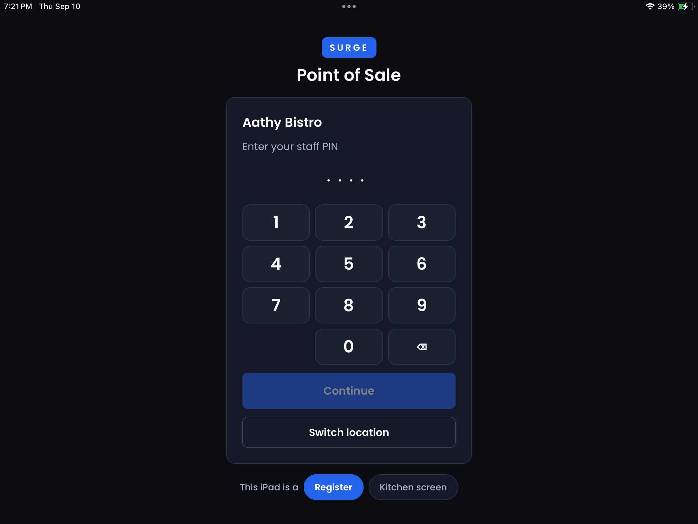

Staff PIN pad / employee sign-in evidence
Every screenshot referenced in docs/pinpad-competitor-study.md, loaded live
from the vendors’ own CDNs. Researched 10 September 2026 from public
support documentation, help-centre screenshots, App Store listings and
vendor-supplied screenshots on Software Advice. No merchant account was signed
into and no credentials were used. Every image below was rendered and examined
except where explicitly flagged as unviewed.
Images are hot-linked rather than stored locally — the workspace shell in this
session has no outbound network access (all egress blocked by an allowlist proxy), so
docs/pinpad-screens/touchbistro/ and docs/pinpad-screens/square/
exist but are empty. If a vendor rotates a CDN path, that image will 404; the source
article link under each one still resolves.
Surge — ours, for comparison

Our iPad sign-in — step 3 of 3 2160×1620, landscape
Already in this folder; included so the comparison is on one page.
Measured against this capture: the card spans roughly 35% of the screen width (380 pt of 1080 pt) and about two thirds of the display is empty black. Compare TouchBistro, which fills that space with brand art; Lightspeed K-Series, which fills it with a staff grid and a device-diagnostics panel; and Lightspeed L-Series, which fills it with eleven photo tiles six across. Note also what is not here that three or four vendors have: no clock-in control, no staff list, no shift state, no offline indicator, and no clock other than the iOS status bar.
SURGE mark, Point of Sale, then a centred card:
Aathy Bistro, Enter your staff PIN, four dot placeholders,
a 3×4 keypad with bottom row blank · 0 ·
⌫, a Continue button (no auto-submit),
Switch location, and a This iPad is a: Register | Kitchen screen
device-role selector.
Measured against this capture: the card spans roughly 35% of the screen width (380 pt of 1080 pt) and about two thirds of the display is empty black. Compare TouchBistro, which fills that space with brand art; Lightspeed K-Series, which fills it with a staff grid and a device-diagnostics panel; and Lightspeed L-Series, which fills it with eleven photo tiles six across. Note also what is not here that three or four vendors have: no clock-in control, no staff list, no shift state, no offline indicator, and no clock other than the iOS status bar.
Local file —
docs/pinpad-screens/surge/ipad-signin-step3-pinpad.png.
Code inventory: docs/pinpad-surge-inventory.mdTouchBistro — iPad POS

The passcode screen 995×1210
Full-bleed dark teal-navy with a tone-on-tone chef-hat watermark bleeding off
the right edge. Venue name
TouchBistro Sample Cafe centred at the top, white,
light weight. One centred white card: header row with placeholder Enter passcode
left and a QR-code icon right; a 3×4 keypad, 1-9 phone order;
bottom row red backspace (circled left chevron) · 0 ·
green circled checkmark (submit). A full-width Clock in/out bar is
attached beneath the pad inside the same card. Below, the background curves into a white band
carrying View menu — the menu is readable without a passcode — then the
TouchBistro wordmark. The card occupies roughly a third of the frame width; the leftover space
carries brand art, not information.
Schedule enforcement → Manager Confirmation 938×552
Left: clocking in outside a scheduled shift produces
“Something went wrong / We’re unable to process your clock-in. Please try again or
contact our support team for assistance. Error: Not scheduled to work or 7shifts scheduling
integration role name does not match” with an
OK button — a policy
refusal dressed as a crash, with integration internals leaked into the copy.
Right: the Manager Confirmation modal, × top-left to decline,
copy “Enter a manager passcode or present a manager’s QR Code to
continue.” Note this keypad is styled differently from the sign-in keypad
— light grey rounded keys, ⌫ · 0 · a navy
checkmark, versus the sign-in pad’s red/green. Two keypads, two visual languages.
Staff-type picker after the passcode 975×571
A
Select Staff Type sheet — Bartender / Waiter / Host —
over the passcode screen. Staff assigned more than one type choose which one they are working
as for this shift, which then drives their pay rate and permissions. The venue name sits
centred above on the same dark navy field.
Fast user switch, bottom-left 999×353
The floor plan’s bottom bar:
Darko: Switch at bottom-left
(highlighted in red by TouchBistro’s own annotation), TouchBistro | Main Floor
centred. The clock-in article’s instruction is “If you are on the floor plan screen and
do not see your name in the bottom left, tap it.” Identity and the switch affordance are one
object.
The same control in a full product screenshot
Vendor-supplied. iPad status bar
12:06 PM Tue Jun 23 · 99%;
top bar Menu | Orders | Register — TouchBistro Sample Cafe —
Reservations | Admin; bottom bar Admin: Switch left,
TouchBistro Lite | Main Floor centre. Confirms the switch control is persistent
chrome, not an artefact of the help-centre crop.Square — Square for Restaurants, iPad POS
No public image of Square’s passcode screen exists that I could find.
Not in the help centre (article 8357 illustrates passcodes with a video, not a screenshot),
not in the App Store gallery (stylised isometric renders), not on the Play listing (the
handheld app), and not in Software Advice’s six-screenshot Square for Restaurants
gallery. Keypad layout, digit order, masking, auto-submit behaviour, and whether the screen shows
a business name, clock, logo, location or offline state are therefore all
unverified for Square. The images below are the closest available context.

Sign-in chrome on the order screen 1400×1049
The strip under the iPad status bar reads
POS1 – Lauren N.
top-left (device name + signed-in user), Reader Ready centred and
Printer Connected top-right — card-reader and printer state share a strip with
the operator’s identity. Bottom-left is Log Out LN: the
log-out button carries the user’s initials. Square, like TouchBistro, keeps a
persistent user-identified switch control in the bottom-left corner.
Caveat: vendor-supplied and the styling looks older than current Square for
Restaurants — treat as indicative, not current.
App Store render 2048×2732 native
Square’s own marketing asset.
Log out is visible as a
bottom-navigation item alongside Menu / Orders / Transactions / Items / More, corroborating that
log-out is first-class chrome rather than buried in a settings sheet. The isometric treatment
makes this unusable as layout evidence for anything else.
The video Square uses instead of a screenshot 1280×720
Title card of Use Passcodes with Square Point of Sale, the video embedded
in help article 8357 where a screenshot would otherwise be. Included to document that the
passcode screen is shown by Square only in video form; I could not read frames from it.
Toast — brief, for the “what do others do” section

The Toast passcode screen 624×470
Black, full-bleed. The field label is
Swipe card or enter your passcode — magstripe and passcode
are peers on the same screen. Grey keys 1-9; bottom row
⊗ (clear-all) · 0 · ⌫
(backspace) — the only vendor here with both a clear and a backspace. A
fourth column on the right holds two stacked keys, Timeclock
(hourglass) and a blue Go: the same passcode routes to two destinations. Toast’s
own troubleshooting table lists “User selected Go instead of Timeclock when logging in”
as a known error — the cost of this design, documented by its author. No business name, no
clock, no logo in this capture.
Unviewed:
https://dwvhey99m5tyy.cloudfront.net/images/ka2PV000000SqdBYAS/0EM4W0000088o09
— vendor alt text “Toast device login screen with timeclock button circled”, cited in
Clocking In and Out for Shifts and Breaks.
Listed for completeness; I did not render it, so nothing in the study rests on it.
Lightspeed — the only vendor that does not do blind PIN entry
K-Series Home screen — which is also the lock screen 1400×1050, landscape
Lightspeed’s docs are explicit: “The Home screen is the main lock screen
in Lightspeed Restaurant, which the app returns to after a user logs out.” Black full-bleed.
About top-left; the device name Lightspeed K Series
centred in the top bar; Lightspeed logo; the line “Welcome! Tap an active user, view the
floor plan or clock in/out.”; a Sort by control top-right with
alphabetical and clock buttons; a grid of staff tiles carrying a name and a role
chip (MANAGERS); and three full-width blue buttons pinned along the bottom edge:
Clock in/out · View floor plan · Scan QR code.
The content uses the entire landscape width. Behind About: business name, device
name, active configuration, sharing mode, app version, Wi-Fi SSID, IP address and whether the
device is an active or passive POS — all readable before anyone authenticates.K-Series PIN entry — an overlay after you pick a person 1400×1050
“Please enter your PIN code”, four dot placeholders,
white rounded keys
1-9, and a bottom row of only 0 and <
— there is no confirm key on the pad at all. Behind the dim, the
Clock in / out screen with a search field and a named list (Kay, Manager, Mary,
Michael, Ray). The missing submit key implies auto-submit, but the documented PIN length is a
variable 4–6 digits, which argues against it — unresolved, and flagged as such in the
study. The overlay itself is a narrow centred column; the screen underneath is full-width.L-Series — staff photo tiles 5208×3850
A real iPad in landscape. Status bar
5:38 Tue Mar 2 · 60%.
Top-left, behind an ⓘ: App: 7.36.20237 / Server: 6.0.144599 /
Lightspeed L-Series — version strings on the login screen.
Help Center top-right. A USER LOGIN | PIN LOGIN segmented toggle, then
eleven staff photo tiles, six across, filling the full landscape width, each with
a name and role beneath: Leah - Manag…, Cashier (a generic
role account with a cutlery icon), Heather - Ser…, Amelie - Server,
Gus - Server, Sam - Barten…, Steve - Busser,
Mary, Larry, Kate, Bob. The docs say plainly:
“Tap your user image.” Two tiles (Heather, Amelie) carry a green underline
bar — most likely a clocked-in marker, but that is not documented and is listed
under “could not verify”. Bottom bar: Restaurant Manager ·
Explore new features! · Tools.